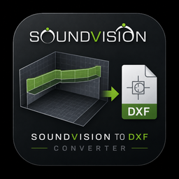

Browser edition · Core v18
Soundvision → DXF Converter
Select a Soundvision project file. Conversion runs locally in your browser; project data is not uploaded to a server.
1
Required
Soundvision file
2
Optional
Loudspeaker DXF
Add the loudspeaker DXF exported by Soundvision if you want v18 to merge it into the same file.
3
DXF export
Loading Python runtime and converter dependencies…